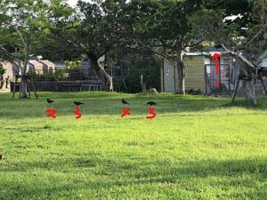
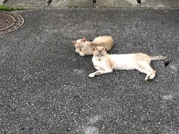

うるがいの話 ある日
最新: 鷹狩りの書
うるがいとは 前提知識です
カニの画像をクリックすると『うるがいの話』サイトを表示します
うるがい(ｳﾙｶﾞｲ urugai)とは、『もずくがに』の名前でとても大きくなります。
たながー（ﾀﾅｶﾞｰtanagaa）とは手長えびのことで、何種類かあり大きいのは車 エビぐらいになります。
ぶながー(bunagaa)とは、赤い髪の毛、赤い身体、そして身長は１ｍ２０ｃｍ ぐらい、川の蟹を食べているの目撃された。場所は沖縄県国頭郡大宜味村のと ある村僕の隣近所に住んでいる爺さんから、聞いた話です。
2021年07月17日 (土）
鷹狩りの書
16:05


『鷹狩りの書―鳥の本性と猛禽の馴らし』著者神聖ローマ皇帝フリードリッヒ
二世１１９４～１２５０年を読みました。約一千年前の人が書いたと思えない
ほど、鳥に対する観察力（その系統のオタクにとって）は素晴らしいと思う。
叔父さんの趣味がメジロ、一時期メジロの店を営んでいた。そのせいもあって
私もメジロの世話については少し知っている。この本の中で、鷹の瞼（マブタ
）の縫合、餌付け、風呂など、メジロの世話と重なるところがある。メジロを
捕獲すると、鳥かごから外が見えないように籠に布で覆いをする。そうしない
と竹ひごの間から逃げ出そうと嘴から頭にかけて傷ついてしまう。餌付けは餌
となる「きな粉」を水で練状にしたものをマッチ棒につけ、メジロの口を開け
て無理やり食べさせる。なお、餌には、リンゴや野菜をすり鉢で擦ってきな粉
と混ぜたり栄養を付けさせる。そして、夏暑い時には口に水を含ませ、プシュ
と霧状にメジロにかけ体温を下げさせる。ふむふむ、今の子供はこいう経験は
できないだろうな。今は捕獲そのものが禁じられている、つくづくいい時代に
生まれたと思う。那覇市の図書館から借りた画像編集ソフトの本『ＧＩＭＰの
ドリル！』の本に、首里図書館発行の貸し出し利用の紙が挟まれていた、前の
借りれ者のものだ。どれどれ、中味は（保管図書館を見るとネット予約）
タロットの秘密 牧志駅前ほしぞら館
タロットリーディング 繁多川図書館
タロット大事典 石嶺図書館
ＧＩＭＰのドリル！ 首里図書館
タロットか・・・。ギターの件もあったので試しに読んでみようっと。近頃カ
ラスの集団をよく目にするようになった。そして、カーでなく明らかに何か話
しているような鳴き声がする。ヨメは気持ち悪いと言っている。タロットと関
係する？
以上